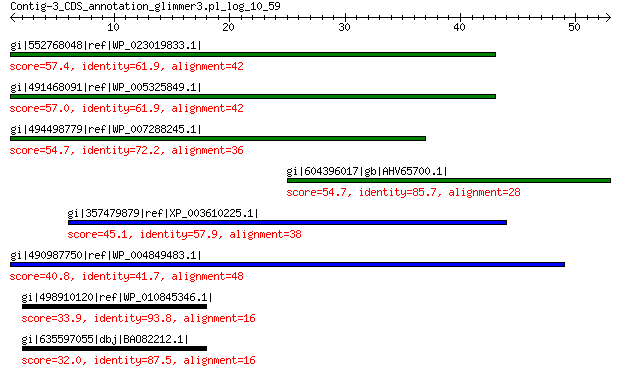

bitscore colors: <40, 40-50 , 50-80, 80-200, >200
 BLASTP 2.2.31+
Reference: Stephen F. Altschul, Thomas L. Madden, Alejandro A.
Schaffer, Jinghui Zhang, Zheng Zhang, Webb Miller, and David J.
Lipman (1997), "Gapped BLAST and PSI-BLAST: a new generation of
protein database search programs", Nucleic Acids Res. 25:3389-3402.
Reference for composition-based statistics: Alejandro A. Schaffer,
L. Aravind, Thomas L. Madden, Sergei Shavirin, John L. Spouge, Yuri
I. Wolf, Eugene V. Koonin, and Stephen F. Altschul (2001),
"Improving the accuracy of PSI-BLAST protein database searches with
composition-based statistics and other refinements", Nucleic Acids
Res. 29:2994-3005.
Database: All non-redundant GenBank CDS translations+PDB+SwissProt+PIR+PRF
excluding environmental samples from WGS projects
49,011,213 sequences; 17,563,301,199 total letters
Query= Contig-3_CDS_annotation_glimmer3.pl_log_10_59
Length=52
Score E
Sequences producing significant alignments: (Bits) Value
gi|552768048|ref|WP_023019833.1| hypothetical protein 57.4 2e-09
gi|491468091|ref|WP_005325849.1| hypothetical protein 57.0 2e-09
gi|494498779|ref|WP_007288245.1| hypothetical protein 54.7 1e-08
gi|604396017|gb|AHV65700.1| cobalamin biosynthesis protein CbiG 54.7 4e-07
gi|357479879|ref|XP_003610225.1| hypothetical protein MTR_4g129340 45.1 6e-04
gi|490987750|ref|WP_004849483.1| hypothetical protein 40.8 0.003
gi|498910120|ref|WP_010845346.1| conserved hypothetical protein 33.9 0.69
gi|635597055|dbj|BAO82212.1| hypothetical protein SRAA_2358 32.0 3.8
>gi|552768048|ref|WP_023019833.1| hypothetical protein [Corynebacterium sp. KPL1989]
gi|550773269|gb|ERS71350.1| hypothetical protein HMPREF1290_02132 [Corynebacterium sp. KPL1989]
Length=56
Score = 57.4 bits (137), Expect = 2e-09, Method: Compositional matrix adjust.
Identities = 26/42 (62%), Positives = 33/42 (79%), Gaps = 0/42 (0%)
Query 1 MWEGPDSQDVGLEAAIIERKRNSSLVESACAEDVTGLNHAPK 42
MW+ DSQ+VGLEAAI+ER RNSSLVE CA++V GL + +
Sbjct 1 MWDRDDSQEVGLEAAILERVRNSSLVEWFCADNVVGLKYTAE 42
>gi|491468091|ref|WP_005325849.1| hypothetical protein [Corynebacterium pseudogenitalium]
gi|311304694|gb|EFQ80766.1| hypothetical protein HMPREF0305_11077 [Corynebacterium pseudogenitalium
ATCC 33035]
gi|311304794|gb|EFQ80865.1| hypothetical protein HMPREF0305_11006 [Corynebacterium pseudogenitalium
ATCC 33035]
Length=50
Score = 57.0 bits (136), Expect = 2e-09, Method: Compositional matrix adjust.
Identities = 26/42 (62%), Positives = 33/42 (79%), Gaps = 0/42 (0%)
Query 1 MWEGPDSQDVGLEAAIIERKRNSSLVESACAEDVTGLNHAPK 42
MW+ DSQ+VGLEAAI+ER RNSSLVE CA++V GL + +
Sbjct 1 MWDREDSQEVGLEAAILERVRNSSLVEWFCADNVVGLKYTAE 42
>gi|494498779|ref|WP_007288245.1| hypothetical protein [Thermosinus carboxydivorans]
gi|121305846|gb|EAX46781.1| hypothetical protein TcarDRAFT_0446 [Thermosinus carboxydivorans
Nor1]
gi|121306121|gb|EAX47050.1| hypothetical protein TcarDRAFT_0745 [Thermosinus carboxydivorans
Nor1]
gi|121306644|gb|EAX47566.1| hypothetical protein TcarDRAFT_1301 [Thermosinus carboxydivorans
Nor1]
gi|121307834|gb|EAX48749.1| hypothetical protein TcarDRAFT_2221 [Thermosinus carboxydivorans
Nor1]
gi|121308125|gb|EAX49039.1| hypothetical protein TcarDRAFT_2728 [Thermosinus carboxydivorans
Nor1]
Length=36
Score = 54.7 bits (130), Expect = 1e-08, Method: Compositional matrix adjust.
Identities = 26/36 (72%), Positives = 29/36 (81%), Gaps = 0/36 (0%)
Query 1 MWEGPDSQDVGLEAAIIERKRNSSLVESACAEDVTG 36
MW ++QDVGLEAAII+R RNSSLVE CAEDV G
Sbjct 1 MWRYKNNQDVGLEAAIIQRVRNSSLVEWRCAEDVRG 36
>gi|604396017|gb|AHV65700.1| cobalamin biosynthesis protein CbiG [Salmonella enterica subsp.
enterica serovar Enteritidis str. SA20094177]
Length=361
Score = 54.7 bits (130), Expect = 4e-07, Method: Composition-based stats.
Identities = 24/28 (86%), Positives = 26/28 (93%), Gaps = 0/28 (0%)
Query 25 LVESACAEDVTGLNHAPKLRQRHVGVVG 52
LVESACAEDVTGLNHAPKLRQRH ++G
Sbjct 311 LVESACAEDVTGLNHAPKLRQRHCVLLG 338
>gi|357479879|ref|XP_003610225.1| hypothetical protein MTR_4g129340 [Medicago truncatula]
Length=303
Score = 45.1 bits (105), Expect = 6e-04, Method: Compositional matrix adjust.
Identities = 22/38 (58%), Positives = 26/38 (68%), Gaps = 0/38 (0%)
Query 6 DSQDVGLEAAIIERKRNSSLVESACAEDVTGLNHAPKL 43
DSQ+V LEAA +ER RNSSL+E +CAED G P
Sbjct 239 DSQEVCLEAATLERVRNSSLIERSCAEDERGCQVLPSF 276
>gi|490987750|ref|WP_004849483.1| hypothetical protein [Coprococcus eutactus]
gi|158449510|gb|EDP26505.1| hypothetical protein COPEUT_01353 [Coprococcus eutactus ATCC
27759]
Length=47
Score = 40.8 bits (94), Expect = 0.003, Method: Compositional matrix adjust.
Identities = 20/48 (42%), Positives = 30/48 (63%), Gaps = 1/48 (2%)
Query 1 MWEGPDSQDVGLEAAIIERKRNSSLVESACAEDVTGLNHAPKLRQRHV 48
MW+ D++ + + I+R RNSSLVE CA+ ++GL PKL R +
Sbjct 1 MWDFEDTRMLAQKQPYIQRVRNSSLVEEVCAK-MSGLKTTPKLVDRKM 47
>gi|498910120|ref|WP_010845346.1| conserved hypothetical protein [Xenorhabdus nematophila]
gi|484363282|emb|CCW29920.1| conserved hypothetical protein [Xenorhabdus nematophila F1]
Length=23
Score = 33.9 bits (76), Expect = 0.69, Method: Compositional matrix adjust.
Identities = 15/16 (94%), Positives = 15/16 (94%), Gaps = 0/16 (0%)
Query 2 WEGPDSQDVGLEAAII 17
WEG DSQDVGLEAAII
Sbjct 8 WEGSDSQDVGLEAAII 23
>gi|635597055|dbj|BAO82212.1| hypothetical protein SRAA_2358 [Comamonadaceae bacterium A1]
gi|635597056|dbj|BAO82213.1| hypothetical protein SRAA_2359 [Comamonadaceae bacterium A1]
gi|635599443|dbj|BAO84599.1| hypothetical protein SMCB_2371 [Comamonadaceae bacterium B1]
gi|635599444|dbj|BAO84600.1| hypothetical protein SMCB_2372 [Comamonadaceae bacterium B1]
Length=59
Score = 32.0 bits (71), Expect = 3.8, Method: Compositional matrix adjust.
Identities = 14/16 (88%), Positives = 15/16 (94%), Gaps = 0/16 (0%)
Query 2 WEGPDSQDVGLEAAII 17
WEG +SQDVGLEAAII
Sbjct 44 WEGYNSQDVGLEAAII 59
Lambda K H a alpha
0.314 0.131 0.385 0.792 4.96
Gapped
Lambda K H a alpha sigma
0.267 0.0410 0.140 1.90 42.6 43.6
Effective search space used: 441126563598